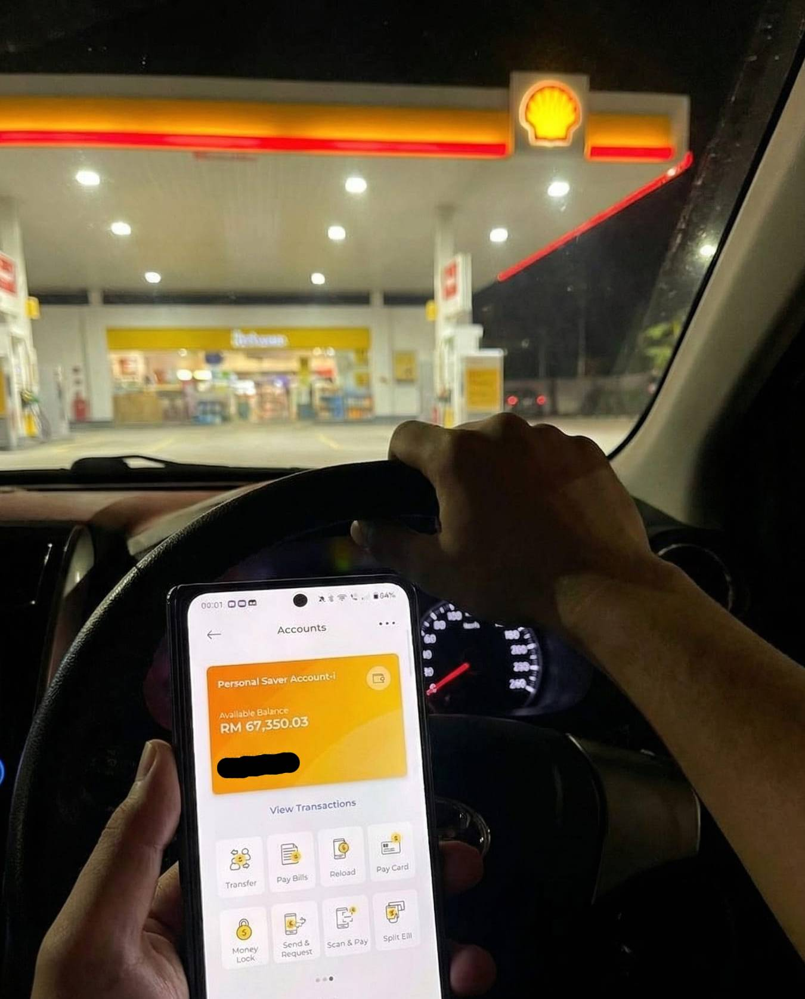

Maybank app 还开着。RM67,350。手机放在方向盘上面，车停在 Cheras 的 Shell 油站旁边。
每个人都说网上那些 slot 全部是骗人的。我以前也是这样想。直到我亲眼看到 Maybank 的余额从 RM247 变成 RM67,350。
你先别急着关掉。让我从头讲。
我家客厅有一张折叠桌。不大，IKEA 买的那种，白色的，一条腿有点 loose，每次写东西会摇。每个月到了 25 号之后，我就坐在那边算。
老婆睡了。女儿也睡了。就剩我一个人，一支笔，一个计算机，还有一叠账单。
Myvi 的 hire purchase，RM680。TNB 水电，RM320。Astro，RM120（老婆要看戏，cancel 不了）。老婆的 clinic 费用，她腰有旧伤，每两个星期要去 chiropractor，一次 RM100，一个月 RM200。女儿幼儿园学费，RM450。CIMB credit card minimum payment，RM380。两个人的 Digi plan 加起来，RM130。
我把每一笔写在纸上，按计算机。RM2,280。
我一个月跑 Grab 做到手，好的月份 RM4,000 左右。不好的时候，雨季少人出门、Grab 调了 commission rate、加上油钱越来越贵，到手 RM2,800 而已。就算按好的来算，RM4,000 减 RM2,280，剩 RM1,720。
这 RM1,720 要加油（一个星期加两三次，一个月 RM600 多）、要吃饭（我在外面吃，一天 RM15 已经很省了，一个月 RM450）、要给老婆买菜的钱、要给女儿零用钱。
每一次按完计算机，答案都是同一个。不够。永远不够。
每天晚上算完账，我都会把手机关机，塞进抽屉里面。这是我跟自己定的规矩。因为我知道，只要手机一开着，我就会忍不住打开那个 app。那个已经吃掉我不知道多少钱的 app。算完账心情最差的时候，就是最容易手痒的时候。所以我逼自己关机。每天晚上都关。
但有时候半夜两三点醒来，还是会偷偷从抽屉拿出来开机。
不是真名，但接下来讲的全部是真的。
Cheras 这边跑 Grab 的，做了五年了。之前在 Sunway Pyramid 那边一间 handphone shop 做 sales，pandemic 之后店直接倒了。老板欠薪两个月跑了。我就出来开 Grab。
好的月份能做到四千多。不好的时候，两千八都不到。
老婆在 Taman Connaught 那边的 bakery 做 part time。一个月 RM1,200。加起来也是 tight。
Grab 司机有一个 WhatsApp 群，大家平时在里面分享哪里塞车、哪个 zone 比较多单。有一天，一个叫 Danny 的司机丢了一张截图进来。Maybank 的 transaction record，赢了 RM1,600。
底下一堆人问在哪里玩的。Danny 发了一个链接。
我想，RM30 试试看而已嘛。输了当请朋友吃饭。
第一个星期还好。赢了 RM80。提出来了。开心到不行，好像自己发现了什么 secret formula。跟老婆讲 "今天赚了点 extra"，还买了 KFC 回来。
第二个星期，充了 RM100。输了。想说回本就好。充多 RM100。又输了。再充 RM50。赢了 RM30。又输了。
第三个星期开始在 Telegram 找什么 gacor pattern、什么时间段赢率最高、什么 Gates of Olympus 几点 scatter 会掉、什么 Sweet Bonanza 几点爆分。加了五六个群，每天看人家分享 "攻略"。现在想起来，全部是废话。
到了第二个月，我已经在每天做完 Grab 之后，晚上老婆小孩睡了就开始玩。有时候玩到凌晨两三点。第二天六点半还要起来接 morning 的单。
你一定知道那种感觉。
开始的时候，balance 慢慢上。你觉得今天很 Ong。心里已经在算等下要 withdraw 多少了。然后突然间，十分钟之内，全部没了。不是慢慢输。是像有人按了一个 switch，哗的一下吸干你。
然后你跟自己说：是我太 greedy 了。我应该刚才就 cash out。我不应该把注码拉大。下次我一定控制。
下次，一模一样。
之后你又说：是我选错时间了。可能凌晨两点 hit rate 比较高。可能星期天比较 Ong。
还是一模一样。
然后你开始 chase loss。输了 RM200 就想充 RM300 回本。回本了想多赚一点。多赚了又输回去。循环，重复，无限。
一年半。这样的循环重复了不知道几百次。
阿 Heng 是我在 Grab hub 认识的。大家都跑 Cheras 到 KL 这一带，有时候在 Wangsa Maju 那边的 mamak 等单，坐一起喝 teh tarik，骂 Grab 抽太多、骂油价、骂 toll 起价。
他以前跟我一样。每天在群里面讲 "又输了"、"妈的这个 slot confirm 吃人的"、"老子下次再玩是狗"。然后三天后又在群里面问 "谁有好的 platform intro 一下"。
突然有一天，他安静了。不骂了。也不 share 输钱截图了。
我没怎么在意。以为他戒了。
过了大概三个星期，有一天我们在 Taman Maluri 那边的 mamak 等单。他点了一杯 Milo Ais，跟我说他把 Myvi 一整年的 remaining loan balance 还清了。一次过给完。
我问他：你中 Magnum 4D ah？还是 Da Ma Cai？
他笑了一下。那种笑法不是开玩笑的笑。是那种...怎么讲呢，像是松了一口气的笑。你只有自己经历过才会有那种表情。
然后他拿手机给我看。三张截图。
RM5,700。RM9,400。RM18,200。
三次不同的，最近五个星期的。全部有 Maybank 的 transaction record。有日期有时间。
我说：等等...你还在玩 slot？
他说他认识一个人。以前在一间网赌公司做过 IT support 的，后来良心不安辞职了。跟他讲了一些后台的东西。听完之后他整个世界观都变了。
阿 Heng 把那个人跟他讲的，全部告诉了我。
我听完之后，坐在 mamak 的塑料椅上大概十分钟没有讲话。Milo Ais 的冰都融了。
不是什么 "运气不好" 那么简单。是一整套系统，从你注册的那一秒就开始操作了。
正规的游戏，RTP（就是回报率）是固定的。比如 Gates of Olympus，96.5%。写死在 Pragmatic Play 的服务器上面，谁都碰不到。但那些黑平台不是真的连 Pragmatic Play 的服务器。它们后台有一个隐藏设定，管理员可以随便调你的赢率。想调多低就多低。40%、30%、甚至 10%。
你以为你在玩 Gates of Olympus，其实你玩的是一个赢率被调到剩 10% 的假游戏。你拿什么跟它赌？
这个是最厉害的一招。你看到的画面是 Pragmatic Play 的画面，声音也是，符号也是。100% 一模一样。但你每一次 spin 的请求，不是发到 Pragmatic Play 的真实服务器。是发到柬埔寨或者缅甸的一台假服务器。画面是偷来的，数学是假的。你以为你在跟 Pragmatic Play 赌，其实你在跟一台冒牌电脑赌。
连游戏代码都是黑市上买来的，几千块美金一套，换个 logo 就上线了。从里到外全部是山寨货。
系统检测你的下注金额。你 bet RM1、RM2 的时候，偶尔让你赢一点。让你觉得 "今天手气不错"。但你一把注码拉大到 RM20、RM50，赢的符号就消失了。直接切换。
你回想一下，是不是每次小注偶尔中，大注永远空？不是巧合。不是运气。是系统专门等你加注那一秒才下手。
新账号注册进来，系统标记你是 "小猪"。前一两个星期，故意让你赢。赢率拉到超过 100%。你开心到跟朋友讲 "这个 platform steady"，然后充更多钱进去。
等你充到一个目标金额，比如 RM2,000、RM3,000，系统一键切换到 "杀猪模式"。赢率直接变 0%。你那几千块，三天之内被吸到一分不剩。
你还以为是自己运气突然变差了。
阿 Heng 讲完这四个之后，我把自己过去一年半的经历全部对号入座。
刚注册那个平台，第一个星期赢了 RM80？养猪。
之后每次玩十分钟先赢，然后突然全部没了？偷调赢率。
有一次赢了 RM3,200，提款，"系统维护中"，等了五天，第六天账号直接被 block？锁死。
小注偶尔赢，一加大注码就死？大注必死。
阿 Heng 还讲了一件事。
"你知道那些 '300% Welcome Bonus' 是怎么回事吗？"
充 RM100 给你 RM300 free credit。听起来好像很划算对不对？
但后面有一行小字。Turnover 要求 30 倍。意思是你要下注 RM9,000 才能提款。你才充了 RM100 而已。RM9,000 的下注啊。
而且那 RM9,000 的下注，全部是在赢率旋钮调到最低的情况下跑的。它们等你开始用真钱下大注的时候才启动大注杀手。Bonus 不是福利。Bonus 是鱼饵。
我问阿 Heng。
"YE55。"
我的第一个反应："跟其他的有什么分别？全部不是一样的 meh？"
被骗过这么多次了。XXSlot、WinXXX，每一个都讲自己最好。到最后全部一样。
阿 Heng 跟我解释。那些黑平台，你的 spin 是经过它们自己的影子服务器跑的。中间隔了一层，想动手脚就动手脚。但 YE55 不一样。它是直接连 Pragmatic Play 官方服务器的。
你玩的时候，你不是在跟平台玩。你是直接跟 Pragmatic Play 玩。
Pragmatic Play 是什么？全球最大的游戏开发商之一。它是上市公司。游戏的 RTP 是写死在他们服务器上的。没有偷调赢率。没有镜子游戏。没有大注必死。平台碰不到，改不了。你赢就是赢。
YE55 也有 turnover 要求，但那是正常的、行业标准的 turnover，不是那种故意设到 30 倍 50 倍让你永远提不出来的陷阱。赢的钱就是你的钱。
我还是半信半疑。但 RM50 嘛...一 tank 油都不到。输了就当自己请自己吃一顿 nasi lemak。
当天晚上回到家。大概十点半。老婆在房间看戏，女儿已经睡了。
我坐在客厅那张折叠桌前面。TNG reload 了 RM50 进 YE55。
注册很快。网页版直接玩，不用 download 什么 APK。这个我喜欢。之前那些 APK 平台 download 来 download 去的，手机差点中毒。
打开 Gates of Olympus。故意没有领任何 bonus。阿 Heng 讲的，不领 bonus 才看得出真假。
前二十分钟，正常的上上下下。赢一点，输一点，balance 从 RM50 到 RM70 到 RM42 到 RM63 到 RM85。
但有一个东西不一样。
没有那种 "先让你赢然后突然一下子全部吸干你" 的 pattern。没有那个 switch。二十分钟了，上下浮动是 random 的。赢的时候不会觉得 "被喂"，输的时候不会觉得 "被吸"。
就是那种...公平的感觉。你说不上来，但身体分得出。
第三十七分钟的时候。
四颗 scatter 掉下来。免费 spin 触发了。
第一轮 multiplier 叠到 x8。第二轮 x15。第三轮 retrigger，又来。
屏幕上面的数字跳得很快。我的心跳也很快。
最后停下来的时候，我看了一眼。
RM67,350
我看了三遍。关掉 app。等了十秒。重新打开。
还是 RM67,350。
你可能觉得奇怪。赢了六万多块，怎么不马上提？
因为我怕。不是兴奋，是怕。
上一次在另一个平台，赢了 RM3,200。按了提款。等了一天。"系统正在处理中。" 第二天，"系统维护中，请稍后再试。" 第四天，"您的账号因异常操作已被暂时冻结，请联系客服进行核实。" 我联系客服了。叫我提交 IC 正反面、银行 statement、还有手持 IC 的自拍照。我全部都提交了。
第七天，账号直接被 ban。连我自己充进去的本钱 RM500 都没了。客服 WhatsApp 已读不回。
再上一次，另一个更早的平台。通过一个 WhatsApp 代理充值。赢了 RM1,800。跟代理说要提款。代理说 "等一下 ah，系统在 update"。等了两天。第三天，代理直接把我 block 了。号码打过去没人接。一千八就这样没了。
所以你明白吗。对我来说，赢钱不是最难的部分。拿到钱才是。每一次赢了之后那种期待，然后每一次等来的都是失望。这种感觉，比输钱还要难受。
我坐在那张折叠桌前面，把手机翻过来。屏幕朝下。放在桌上。
我不想看。因为我知道接下来会发生什么。"系统维护"。"正在审核"。"请联系客服"。每一次都是这三句话。每一次。
我站起来走到厨房。打开水龙头。水在流。我就站在那里看着水流。
背后客厅的灯还亮着。那张桌子上放着手机。手机里面有 RM67,350。或者说，有一个写着 RM67,350 的数字。因为到底是不是真的能拿到，我不知道。
我点了一根烟。没有抽。就看着它慢慢烧。灰一截一截掉在水槽里面。水龙头滴下来的水把灰冲走了。
脑子里面全部是以前的画面。代理 block 我的那个 WhatsApp 对话框。那个 "账号已冻结" 的红色通知。另一个平台永远转不完的 loading 圈。
每一次赢了都是空欢喜。每一次。
我跟自己讲，这次也是一样的。等下翻过手机，一定又是 "提款审核中"。然后拖三天五天。然后 block 账号。然后又是什么都没有。我已经习惯了。已经不会再 surprise 了。
烟烧到过滤嘴了。我才回过神来。
手机震了一下。从桌面传过来的那种嗡嗡声。
我没有马上去拿。站在厨房又等了大概十几秒。深呼吸了一下。
然后走回去。把手机翻过来。
Maybank notification。
"RM67,350.00 credited to your account ending 8172."
我看了三次。关掉 Maybank app。重新打开。还在。再关掉。再打开。还是在。
从按提款到钱进户口。3 分 12 秒。
没有客服打来问东问西。没有什么安全审核。没有系统维护。没有叫我拍 IC。没有叫我等三天。
进了。就这样。
客厅的灯还亮着。空调嗡嗡地吹。隔壁 uncle 在看 Astro 重播的港剧，声音隐隐约约传过来。
桌上还是那些东西。车贷的 reminder letter。CIMB credit card 的 statement。TNB 水电单。女儿的学费通知。
但它们的意义已经完全不同了。
四十三分钟。我就坐在那里，什么都没做。手机握在手里，Maybank app 开着。RM67,350。
我想起一年半来的自己。每天跑完 Grab 回到家，晚上坐在这张椅子上算账。每一次都不够。每一次都差那一两百块。然后忍不住打开 slot app，想说赢一点补贴家用。然后输。然后骂自己。然后第二天再来一次。
四十三分钟之后，我还是不敢信。
我起身拿了车钥匙。轻轻把门关上，不想吵醒老婆和女儿。楼下停车场的灯有一盏坏了，我摸黑走到 Myvi 旁边，坐进去，发动引擎。
我也不知道要去哪里。就是觉得在家里坐不住了。那个数字太大了，大到不真实。我需要出去透透气，做一些平时会做的事情，才能确认自己不是在做梦。
开了大概五分钟，看到 Cheras 那间 Shell 油站还开着。我转进去。油其实还有半 tank，但我还是停了下来。
加完油之后，我没有马上走。把车停在旁边，engine 没关，冷气在吹。
我又打开 Maybank app。还在。RM67,350。
我把手机靠在方向盘上面，拍了一张截图。副驾驶座上那叠账单还在...出门前顺手拿了，也不知道为什么。可能是想提醒自己，这些东西，从今天开始，全部还得起了。
就是文章最上面那张照片。Shell 油站。方向盘。Maybank app。RM67,350。那就是那个时候拍的。
我不是网红。没有人给我钱写这些。我就是一个 Cheras 跑 Grab 的普通人，一年半来以为自己是全世界最衰的那个。
你输钱不是因为你笨。不是因为你不懂控制。不是因为你贪心。
是那些平台从第一天就设好了圈套。偷调赢率、镜子游戏、大注必死、养猪杀猪。你一走进去，就已经输了。不关你的事。
你需要的不是新的 pattern。不是新的 Telegram 群。不是新的 bonus。不是什么攻略或者 gacor 时间表。
你需要的只有一样东西：一个你赢了之后，真的会把钱给你的地方。
| 黑平台 | YE55 | |
|---|---|---|
| 游戏来源 | 镜子游戏 + 盗版源码，结果随便改 | 直连 Pragmatic Play 官方服务器，平台碰不到 |
| 赢率 (RTP) | 后台偷调赢率，想调多低就多低 | 96.5% 写死在 PP 服务器，没人能改 |
| Bonus | 300% 起跳，但 turnover 30-50 倍，永远提不出来 | 有 bonus 但 turnover 合理，行业标准，不是陷阱 |
| 提款 | "系统维护"、"安全审核"、一拖再拖 | 平均 3 分钟内到账，没有借口 |
| 客服 | 你充钱时秒回，提款时已读不回 | 24 小时真人中文客服 |
"被代理 kencing 过两次。第一次在 YE55 成功提款的时候，我 check 了 Maybank 五次才敢相信。"
"以前每次领 bonus，每次 rungkad。在 YE55 第一次试不领 bonus 正常玩，才知道以前全部是陷阱。"
"老公不知道。TNG 充进去不会出现在 joint account。已经提了三次，全部秒到。"
"六十二岁了，被骗怕了。朋友介绍才敢试。这是我第一次赢了真的拿到钱。"
如果你跟一年半前的我一样，坐在家里那张桌子前面，算来算去永远不够，然后骂自己为什么控制不了... 也许问题从来就不在你身上。也许你只是还没找到对的地方。